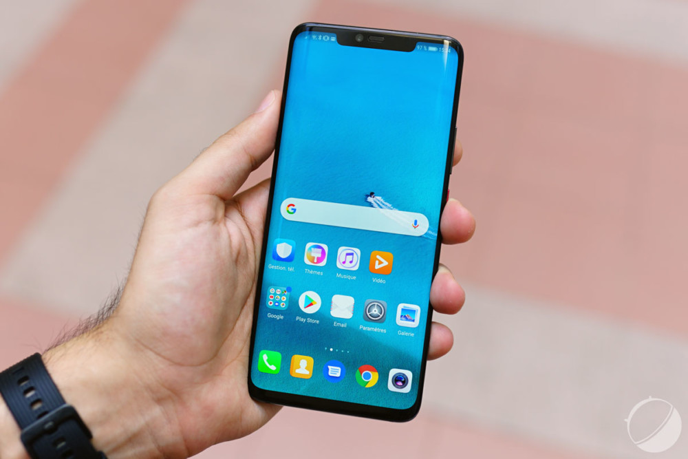
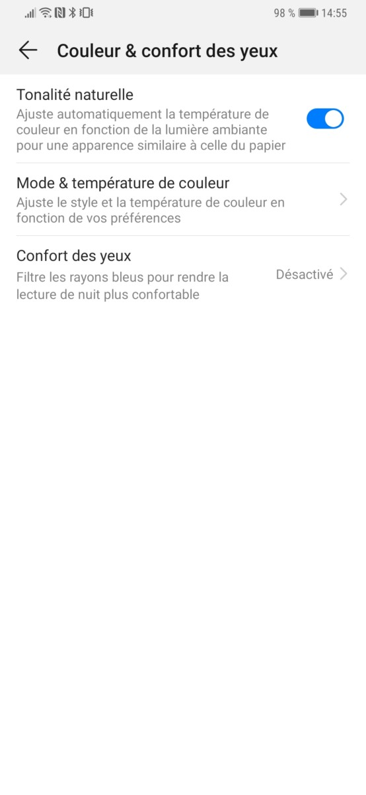
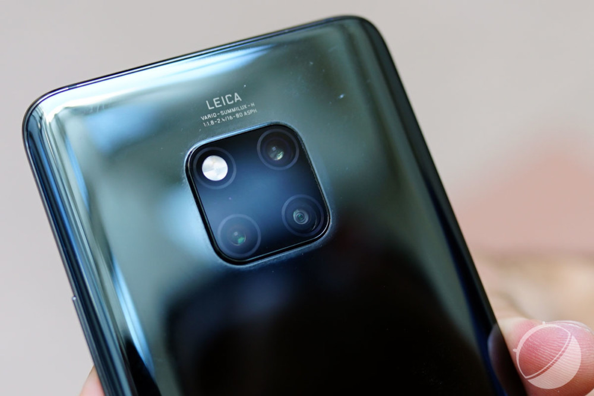
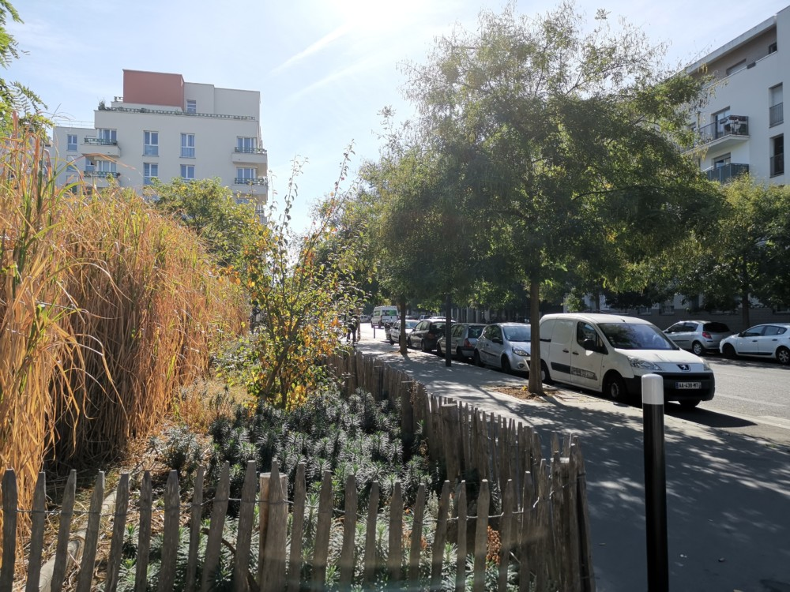
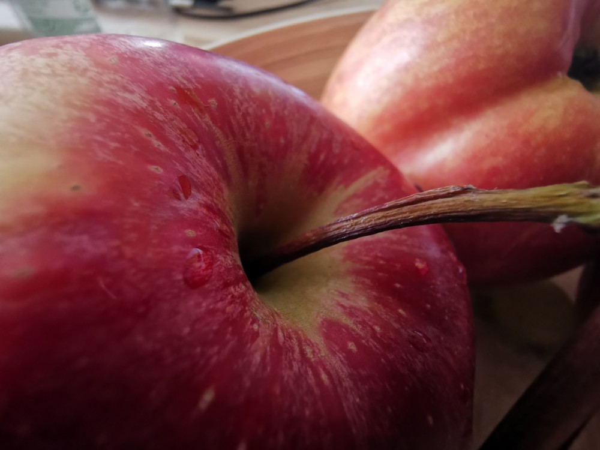
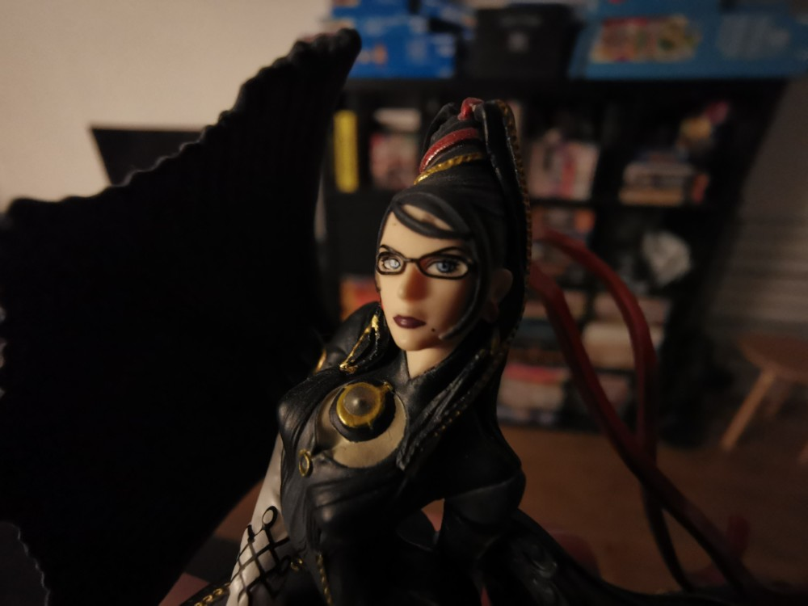
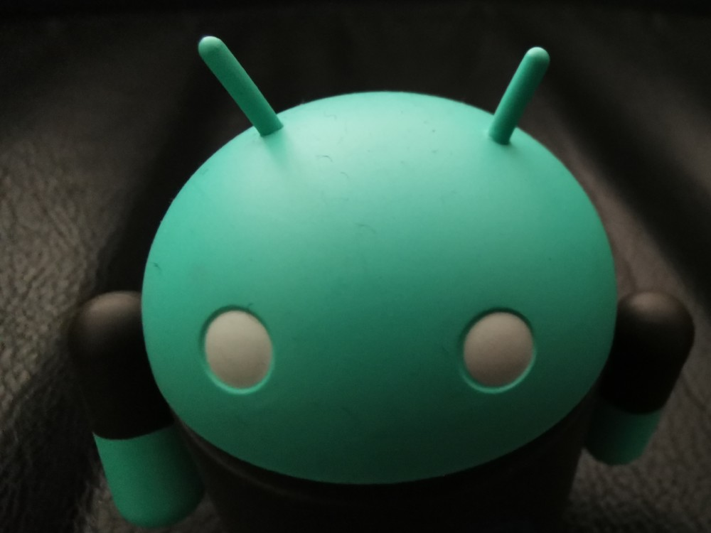
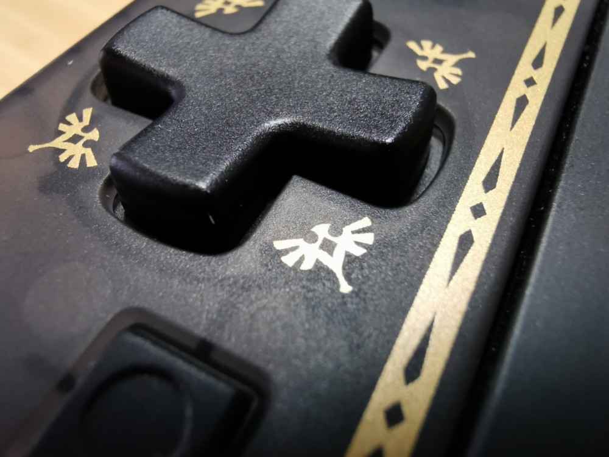
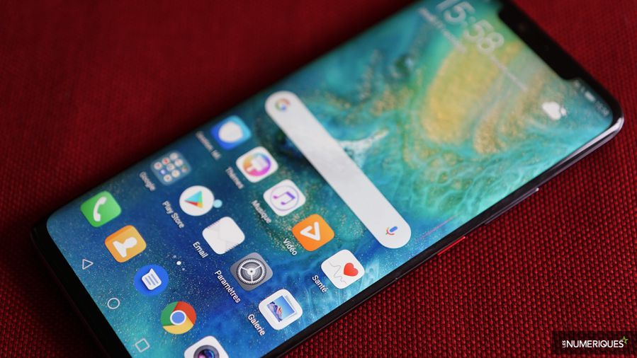

.png)
TEST DU HUAWEI MATE 20 PRO
Note
9/10
Où acheter le HUAWEI MATE 20 PRO au meilleur prix ?
Introduction
Après un excellent Huawei P20 Pro en début d’année, le constructeur chinois met à jour son smartphone plus dédié aux professionnels et power user avec le Mate 20 Pro. Réussit-il à surpasser encore une formule déjà excellente ? Réponse dans ce test.
Fiche technique
| Modèle | Huawei Mate 20 Pro |
|---|---|
| Version de l'OS | Android 9.0 |
| Interface | Emotion UI |
| Taille d'écran | 6,39 pouces |
| Définition | 3120 x 1440 pixels |
| Densité de pixels | 538 ppp |
| SoC | Kirin 980 à 2,6GHz |
| Processeur (CPU) | ARMv8 |
| Puce Graphique (GPU) | Mali-G76 |
| Mémoire vive (RAM) | 6 Go |
| Mémoire interne (flash) | 128 Go |
| MicroSD | Oui |
| Appareil photo (dorsal) | Capteur 1:40 Mégapixels, Capteur 2: 20 Mégapixels |
| Appareil photo (frontal) | 24 Mégapixels |
| Enregistrement vidéo | 4K |
| Wi-Fi | Oui |
| Bluetooth | 5.0 + A2DP + LE |
| Réseaux | LTE, HSPA, GSM |
| Bandes supportées | 2100 MHz (B1), 800 MHz (B20), 1800 MHz (B3), 2600 MHz (B7), 700 MHz (B28) |
| SIM | 2x nano SIM |
| NFC | Oui |
| Ports (entrées/sorties) | USB Type-C |
| Géolocalisation | Oui |
| Batterie | 4200 mAh |
| Dimensions | 157,8 x 72,3 x 8,6 mm |
| Poids | 189 grammes |
| Couleurs | Bleu, Noir |
| Prix | 999€ |
DESIGN
Le Huawei Mate 10 Pro fut le premier haut de gamme du constructeur à embrasser le ratio 18:9, mais gardait un design très plat. Le Huawei P20 Pro aura ensuite eu le rôle d’embrasser l’encoche, tout en gardant sensiblement les mêmes lignes à l’avant.
Le Huawei Mate 20 Pro est finalement une fusion de ces deux tendances. Le grand écran de l’appareil est en effet coupé d’une encoche très longue, mais dont l’épaisseur correspond à celle de la bordure haute du Mate 20 Pro en son temps. Celle-ci est justifiée par l’intégration d’une solution de reconnaissance faciale 3D et d’un haut-parleur frontal.
Le menton de l’appareil est extrêmement fin, et le tout profite d’un arrondi prononcé sur les bords gauche et droit de l’appareil. Le design s’en retrouve drastiquement changé comparativement aux générations précédentes, en bien : l’écran prend vraiment une grande place sur la face avant grâce à cela. Notez que derrière l’écran se trouve d’ailleurs le lecteur d’empreintes digitales, dont nous reparlerons dans la partie logicielle du test.
Bordures arrondies obligent, la place laissée aux boutons est amoindrie. On n’en retrouve que sur la tranche droite, où le volume est naturellement placé en haut du bouton de verrouillage qui sort du lot grâce à son coloris rouge. Le placement est vraiment idéal, puisque venant naturellement là où se pose le pouce à la prise en main, et la note de couleur vient toujours plus aider à se retrouver. Simple bande discrète sur le P20 Pro, elle est ici vraiment visible et donc bien plus utile.
En haut, on retrouve un blaster infrarouge ainsi que le micro de réduction de bruit. En bas, seul le port USB type C apparaît au premier coup d’œil. Pas de grille haut-parleurs, et c’est normal : le second haut-parleur est directement intégré dans le port, sans que le son ne soit pour autant bloqué lorsqu’un câble est chargé. Une sacrée optimisation en termes de design, qui simplifie les traits du smartphone et le rend toujours plus haut de gamme.
La trappe SIM est également logée en bas de ce téléphone, et accueille une seule nano SIM sur notre version de test (une version dual SIM sera commercialisée). Notez que l’appareil n’est pas compatible micro SD, mais nano SD (sur l’autre côté de la trappe) : il s’agit d’un nouveau format de carte mémoire propulsé par Huawei faisant la taille d’une nano SIM.
Au dos, dont les bords sont arrondis afin de rejoindre naturellement la tranche avec le même angle que la face avant, on remarque avant tout l’appareil photo. La configuration à triple capteurs photo, dont nous aborderons les performances plus loin dans ce test, s’organise cette fois-ci en forme de carré. Par ailleurs, les coins de ce carré suivent l’exacte même forme que les coins du téléphone, et dépassent très peu de l’ensemble; bien moins que le triple capteur du P20 Pro, faisant que le téléphone reste relativement stable utilisé à plat sur une table. Et c’est là… tout ce qui est intégré au dos.
Tout est donc dans le raffinement en termes de design pour ce Huawei Mate 20 Pro. Et ça fonctionne, vraiment : l’appareil en main donne l’impression d’être un objet de luxe, travaillé avec une minutie extrême. Le feeling en main est comparable aux plus haut de gamme de Samsung, avec cependant une note esthétique particulière le faisant tout de même se démarquer.
Ce Huawei Mate 20 Pro est très réussi, c’est indéniable. Le revêtement du verre du dos a également été travaillé afin d’être moins glissant que sur le P20 Pro, et cela se ressent : doux au toucher, il n’en est pas moins agrippant pour éviter les accidents, et moins enclin à attraper les traces de doigts. Les deux gros problèmes du modèle du début d’année ont donc été atténués, même si le téléphone reste un brin glissant et récupère toujours le gras des doigts. On nous a promis que les coloris verts et bleus « hyper optical » étaient traités spécialement contre les traces, mais nous ne pouvons pas le tester.
Aussi sublime que sobre, il ne fait qu’impressionner. Certains regretteront l’encoche très large, mais elle s’oublie très rapidement à l’utilisation et peut comme toujours être cachée de manière logicielle. Surtout, l’existence même de cette encoche est bien justifiée ; une nouvelle fois, rendez-vous dans la partie logiciel.
Notez également qu’à 190 grammes (soit 10 grammes de plus que le P20 Pro ou le Mate 10 Pro), le Huawei Mate 20 Pro fait son petit poids — emphase sur petit, ce n’est pas un poids lourd — même s’il est très bien équilibré. J’ai tendance personnellement à apprécier ressentir le poids de mon smartphone, puisque cela me rassure sur sa qualité, et ce trait ne m’est apparu qu’en le faisant prendre en main par mes collègues.
Pas de panique pour les petits accidents du quotidien : le Huawei Mate 20 Pro est certifié IP68, faisant qu’il résistera avec aisance à un verre renversé. Il reste bien sûr un grand téléphone, dans la lignée de la gamme Mate. Son ratio 19,5:9 lui permet cependant de mettre l’accent sur la longueur plutôt que la largeur. Il a donc une préhension sensiblement similaire à celle d’un Galaxy Note de dernière génération ou d’un Huawei P20 Pro.
ÉCRAN
Le Huawei Mate 20 Pro s’équipe d’une grande dalle OLED de 6,39 pouces supportant une définition maximale en Quad HD+. Il s’agit d’une dalle au ratio 19,5:9, très longiligne, qui est qui plus flexible et courbée sur les côtés pour ce design. Il est coupé par une encoche très longiligne en haut, dont l’épaisseur est similaire à la bordure du Huawei Mate 20 Pro à 5 mm x 33 mm.
Malgré cela, c’est vraiment l’écran qui saute aux yeux dès que l’on prend le smartphone en main, étant la véritable star du show. Son design presque sans bordure le fait vraiment sortir du lot, d’autant qu’il apparaît très coloré et lumineux. Dalle OLED oblige, les contrastes sont vraiment excellents.
Sous notre sonde, on peut voir qu’en mode vif par défaut, la température de couleurs moyenne du Huawei Mate 20 Pro est assez froide à 7600K, soit la moyenne de ce qu’il se fait actuellement. La dalle est également très lumineuse, avec un maximum de 664 cd/m² enregistré. L’espace de couleurs dépasse très largement celui du sRGB. Ses angles de vision sont également excellents, et le « rainbow effect » observé sur le P20 Pro n’est plus à l’ordre du jour.
Comme toujours, EMUI propose un large panel d’options pour régler la dalle comme vous le souhaitez. Ici, on notera surtout une adaptation automatique de la température de couleurs par rapport à la lumière ambiante, deux modes (naturel et vif) d’affichage ainsi qu’un réglage précis des couleurs avec trois réglages prédéfinis (chaud, froid, défaut). C’est là un panel très complet, pour une dalle visuellement bluffante.

Notez tout de même que par défaut, le Huawei Mate 20 Pro est réglé pour utiliser la « résolution intelligente », qui modifie automatiquement la définition d’affichage selon l’activité afin d’optimiser l’autonomie du téléphone. Vous avez totalement le choix de désactiver cette option, et choisir la définition que vous préférez entre HD+, Full HD+ et Quad HD+.
LOGICIEL
Le Huawei Mate 20 Pro est livré en sortie de boîte avec Android 9.0 Pie et l’interface EMUI 9.0, ainsi que le patch de sécurité d’octobre 2018. Il s’agit-là des toutes dernières mises à jour disponibles en date, c’est donc parfait.
La nouvelle version de l’interface propriétaire EMUI ne cherche pas à révolutionner les choses, bien au contraire. On se retrouve dans un premier temps dans un espace familier. L’interface par défaut n’offre pas de tiroir d’applications, qui doit être activé dans les options. On retrouve à gauche le volet Google Now, et un volet de notification toujours très épais accueillant de nombreux raccourcis système personnalisables. Le magasin de thème finira de nous offrir un large panel d’options de personnalisation du téléphone.
Les nouveautés liées à Android 9.0 Pie sont très clairement les plus visibles, comme le nouveau système de gestion de volume qui met la priorité sur le volume média avant le choix sonnerie/vibration, relayé à une simple icône sur laquelle appuyer s’affichant sur la droite à l’horizontale.
La plus marquante reste l’intégration des gestes de navigation, pour remplacer les habituelles touches de navigation et le dock de navigation cher à Huawei. Il fonctionne ainsi : un glissement du bas vers le haut ramène à l’accueil, rester appuyer amène au mode multitâche orienté à l’horizontale, et un glissement de n’importe quel côté du téléphone vers le centre correspond au précédent. Enfin, remonter de bas en haut sur le côté gauche active Google Assistant.
Le tout demande un certain temps d’adaptation, particulièrement pour « précédent », mais reste très efficace et rapide une fois bien intégré par l’utilisateur. Je regrette seulement le retour à l’accueil : avec un lanceur d’applications alternatif (type Nova ou Rootless Pixel Launcher), il affiche toujours le mode multitâche une fraction de seconde avant de vraiment remettre sur notre page principale. Ce rendu fait quelque peu brouillon, mais la compatibilité des lanceurs alternatifs avec Android 9.0 Pie n’est pas encore complète : le problème n’est donc pas lié au téléphone en lui-même.
C’est sur l’organisation des paramètres qu’EMUI 9.0 a décidé de faire un grand changement. Les menus ont été simplifiés afin de rendre plus accessibles les options les plus utilisées au fil des ans par les utilisateurs, tandis que les modifications plus précises ont été reléguées au second plan. Toutes les options connues et aimées des bidouilleurs sont toujours présentes : elles sont juste moins visibles qu’auparavant, puisque moins populaires.
On pourra noter que les applications doublons sont toujours aussi présentes sur le système, notamment l’agenda, l’email ou encore le magasin alternatif « AppGallery ». Cependant, la seule application publicitaire, pour Booking.com, est facilement désinstallable, comme de nombreux outils dont l’intérêt reste tout relatif (l’application Miroir notamment).
L’autre méthode de verrouillage pouvant également être utilisé dans ce contexte est évidemment le bon vieux lecteur d’empreintes, qui passe ici… sous l’écran ! Cette solution peut être activée en même temps que la reconnaissance faciale 3D, mais cette première a tendance à vous détecter avant même que vous n’ayez eu le temps d’en voir la couleur.
Très agréablement placé, il n’en est pas pour autant plus lent que les solutions classiques connues de tous. Au ressenti, une demi-seconde se rajoute par rapport aux capteurs que l’on utilise depuis maintenant deux à trois ans sur toutes les gammes confondues. Ça reste toutefois assez rapide pour ne pas être frustrant ; ça se remarque, seulement
Aussi, il apparaît dommage de l’utiliser comme solution principale de verrouillage. Par contre, cela fonctionne parfaitement en solution secondaire, lorsque le téléphone est posé sur un bureau ou sur une base de chargement sans fil. Voilà en quoi il trouve son utilité : outrepasser les aspects frustrants de la reconnaissance faciale rapidement et simplement. Étant aussi sécurisé qu’un lecteur d’empreintes standard, ce lecteur s’ajoute pour faire des deux solutions le duo parfait aussi bien d’un côté pratique que d’un côté sécuritaire.
PERFORMANCES
Le Huawei Mate 20 s’équipe du tout dernier Kirin 980, premier SoC Android à être gravé en 7nm, et 6 Go de RAM LPDDR4X. La particularité de ce SoC est de disposer de 4 cœurs basse consommation, 2 cœurs haute performance et 2 autres cœurs « mid » faisant office de juste milieu. C’est le seul SoC du marché à avoir adopté cette configuration spécifique. Il est également le premier à profiter de la puce GPU Mali-G76.
Au quotidien, le smartphone est évidemment parfaitement fluide. Il nous pose cependant un petit « problème » pour nos tests : par défaut, les cœurs haute performance s’activent à peine, de sorte que l’on ne peut pas mesurer efficacement les propriétés du Kirin 980. Il nous faut donc activer le « mode performance » dans les options de batterie afin d’avoir un portrait plus proche de la réalité des capacités de cette puce, justifiant ces deux tours de benchmark pour ce cas particulier.
Le Huawei Mate 20 Pro a ensuite été repassé en mode classique pour les tests d’utilisation, de manière à rester dans la configuration naturelle à la sortie de boîte du téléphone. Et malgré tout, il est loin de nous avoir déçu.
Nous n’avons pas pu correctement tester PUBG Mobile puisque celui-ci refuse de débloquer les options graphiques maximales sur notre modèle de test. Il faut dire qu’à l’heure où j’écris ces lignes, le Huawei Mate 20 Pro n’est ni annoncé ni sorti : ce n’est donc pas très étonnant.
A contrario, Fortnite n’a posé absolument aucun souci. Réglé en configuration graphique haute et à 30 FPS (le maximum actuellement disponible sur ce smartphone), le jeu mobile le plus gourmand du marché tourne parfaitement sur le Huawei Mate 20 Pro et ne souffre d’absolument aucun ralentissement, ce sans même avoir recours au mode performance.
Honkai Impact 3rd, un autre jeu 3D très gourmand, ronronne lui aussi. Le titre de Mihoyo poussé à sa plus grande définition, en 60 FPS, avec HDR et anti-aliasing activés ne souffre d’absolument aucun ralentissement, même avec un très grand nombre d’ennemis affichés simultanément sur l’écran. C’est un délice visuel.
Notons que la chauffe se situe au niveau du capteur photo arrière et est bien contenue. Sur de longues sessions, le Huawei Mate 20 Pro n’est jamais devenu brûlant, seulement chaud, et dissipe très rapidement cette chaleur qui plus est. C’est excellent.
APPAREIL PHOTO
Le Huawei P20 Pro était le premier à intégrer un triple capteur photo, et celui-ci a marqué le marché. Les options à plusieurs capteurs se multiplient désormais, mais le constructeur chinois profite d’une avance confortable sur ce terrain de jeu.

Le triple appareil photo du Huawei Mate 20 Pro
Pour le Huawei Mate 20 Pro, la formule évolue. La marque abandonne son capteur monochrome, donnant cette configuration : un capteur principal de 40 mégapixels avec objectif ouvrant en f/1.8, un second appareil ultra grand-angle de 20 mégapixels à objectif ouvrant en f/2.2, et enfin l’appareil téléphoto de 8 mégapixels ouvrant en f/2.4. Ce dernier profite également de l’OIS.
Notons que cette fois-ci, l’intelligence artificielle qui reconnaît la scène et adapte les réglages automatiquement est désactivée par défaut. C’est peut-être là un bon choix : si son rendu est toujours excellent, le « style » final des photos pouvait ne pas plaire à tout le monde. Il est bien sûr toujours disponible, et toujours plus rapide à comprendre la scène grâce au Dual NPU.
Cette nouvelle configuration vous permet de retrouver 4 configurations : la prise de vue normale, le zoom x3 sans perte, le zoom x5 sans perte, et enfin le grand-angle dit x0,6. Voilà ce que cela donne concrètement :
Le rendu final est presque identique à ce qu’offrait déjà le Huawei P20 Pro. On a ici des photos en plein jour avec un piqué excellent et un énorme niveau de détails. Le HDR fonctionne superbement bien pour conserver toutes les informations de la scène, sans brûler l’arrière-plan ou au contraire assombrir le premier plan. Le « maillon faible » est une nouvelle fois le zoom x5, qui n’offre pas forcément la même dynamique que les autres modes… mais toujours un niveau de détail et de précision impressionnant. Pour un mode si particulier, on ne lui en tiendra pas rigueur.
Le capteur grand-angle n’est cependant pas utilisé que pour cela. Il permet également d’accéder à un nouveau mode « Super Macro » permettant de se rapprocher d’un sujet à quelques centimètres pour le capturer de près. Même en basse luminosité, le niveau de détails qui en ressort est vraiment impressionnant : on est capable de voir des grains de poussière presque imperceptibles à l’œil nu.
   CONCLUSION
Difficile de ne pas tomber sous le charme de ce Huawei Mate 20 Pro. Le constructeur chinois est parvenu à trouver un bel équilibre entre innovations technologiques utiles, design simple et efficace, et débauche de puissance. Ce téléphone est un vrai plaisir à utiliser au jour le jour et avoir le capteur d'empreintes sous l'écran devient vite une habitude. Malheureusement, et malgré toutes les promesses de Huawei, le Mate 20 Pro ne parvient pas à ravir la place de meilleur photophone 2018. Il est certes extrêmement polyvalent grâce à ses trois modules aux longueurs focales différentes et sa pléthore d'options logicielles, mais en qualité brute, il y a encore un tout petit peu de travail à faire. Ceci étant dit, le Mate 20 Pro reste l'un des meilleurs téléphones de l'année et sans aucun doute un compagnon de choix pour les mobinautes acharnés.
